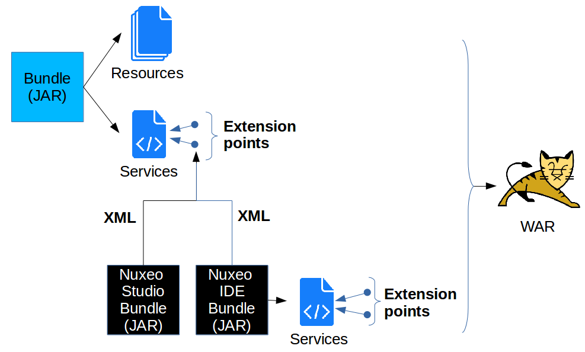
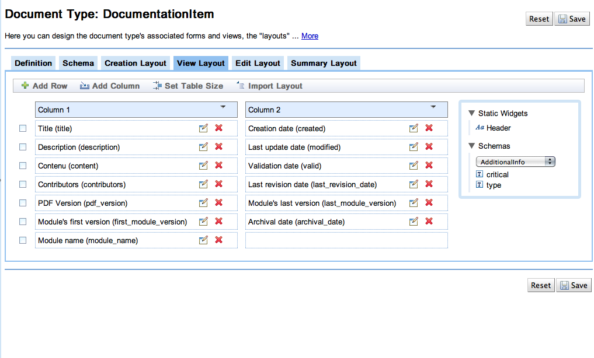
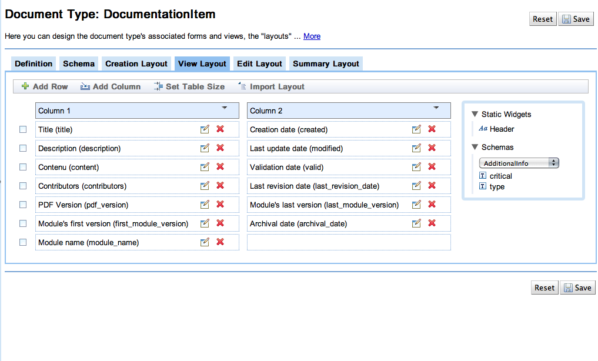

nuxeo
/
Trainings
###Technical Overview
####Extension Points, Contributions
####Advanced Content Repository
####APIs, Connectors and Integration
###Bundles
- 1 bundle = 1 Nuxeo plugin/addon = 1 JAR
- Located in nxserver/bundles or nxserver/plugins
- Configuration/Extension/Customization Mechanism: Extension Point/Contribution
- Loaded by Nuxeo Runtime
- More than 220 bundles in Nuxeo CAP
###Extension Points
#### What are they used for?
- Configure services and components (XML contributions)
- Extend services and components (Java code or scripting)
- Dynamically bind components together
#### Where and why?
- Nuxeo is built with its own technology
- Nuxeo Platform uses extension points everywhere
- Almost every service exposes extension points
- Make configuration easy (no need to touch the source code)
- Allow « clean » contributions easy to maintain (XML)
- Allow the use of Nuxeo Studio!
- One model for the whole platform
###Extension Points
#### Native Functionalities
###Extension Points
#### Extending the Nuxeo Platform

###Customization possibilities
####Nuxeo EP is easily configurable
- Almost all services are configurable
- Actual UI is also very modular
####Clean customizations that can be upgraded:
####use Nuxeo Studio
- to save time in your implementation projects
- to make customization easier
- to do quick prototyping
###About Nuxeo Studio
####Nuxeo Studio is
- An Application Designer
- available as an online service (SaaS)
- a delivery and deployment channel (with Nuxeo Update Center)
####With Nuxeo Studio you can
- configure and adapt your distribution
- save time, money
- ensure long-term maintenance of applications
###Nuxeo Studio Screenshots
 
###Customization Example
Customize the page layout, define the style, set custom tabs, views, content views, buttons, ...
But also doc types, forms, life-cycles, workflows, policy, ...
##About Nuxeo Core: Advanced Content Repository
###Nuxeo Document
####Not a simple « file ».
####An instance of a Document type (File, Note, Folder, Invoice, Contract…)
- Contains `metadata`
Metadata can be filled automatically (creation date, name of the file…) or manually (description, subject...)
- Type is defined by `XSD schemas`.
A document can have many different schemas, and schemas can be shared between document types.
- Has a specific `lifecycle` (ie Draft->Valid->Archived)
- Has `facets` defining its behavior and what you can do with it (Folderish, Hidden, Versionable, Commentable...)
Facets can be associated with schema or Business Object adapter
- Can inherit facets and schemas from another document type: `Mixins`
###Nuxeo Document

###Other Core Features
####Query System
- NXQL: SQL-like query support
- CMISQL support
####BIRT for BI reporting
####Versioning policy and storage
###Repository backend
####Nuxeo Visible Content Store
- Dedicated native SQL storage
- Provides clean SQL mapping
(ie : usable by a DBA or a BI tool)
- Multiple database vendor support
(PostgreSQL, Oracle, MySQL, MSSQL, H2, Derby)
- Storage adapters
- Meta-data and structure: SQL DB
- Binaries: Filesystem, SQLDB, S3 ...
###Advanced Core Features
####Built for performance
- Lazy-loading, pre-fetching, cache, blob streaming, ...
####Transaction management
- Exposes JCA connector
- Support for operations and manual tx management
####Pluggable event system
####Efficient storage
- Snapshotable, automatic deduplication, …
- Support hot backup and GC
##APIs, connectors and integration
###Clients

###Service APIs
####Services can also be exposed via WebServices (with various granularity)

###Automation APIs
####Flexible and pluggable Rest API
- Contribute custom operation
- Assemble custom chains via Studio / XML
- Generic marshaling

###Content Oriented APIs
####Access Nuxeo Repository
- via CMIS (uses Apache Chemistry)
- via MS Windows Sharepoint Services
- Via WebDav

###Events
####Events are triggered for each operation
- can be extended for business specific events
- events can be relayed on JMS Topic
####EventHandlers
- Synchronous / PostCommit / Asynchronous
- Easily contribuable (Java / Script / MDB)
- Great solution for
- Enforcing business rules (synchronous inline)
- Pushing/getting data to/from external systems
###Nuxeo Event bus

###Accessing Nuxeo Data
####Direct access to data auditing (SQL)
####Repository data (ie : Documents)
- Direct SQL access when using VCS
####XML Import/Export service
- Documents
- Audit data
- Relations
###Importing data into Nuxeo
####CMIS, WebDAV & WSS
####Rest API
- Simple POST
- Drag&Drop via browser
####Batch import framework
- manage all technical details (tx, batch size, …)
- lot of examples
####Low level SQL batch insert
###Integration examples
####Security system, SSO, user's management

###Integration examples
####Authentication and User management stack is completely pluggable

###Next?
- Back to the [training agenda](index.html#day-1)
- [Installation Basics](1.3_Installation_basics.html)
←
→

###Customization Example
Customize the page layout, define the style, set custom tabs, views, content views, buttons, ...
But also doc types, forms, life-cycles, workflows, policy, ...
##About Nuxeo Core: Advanced Content Repository
###Nuxeo Document
####Not a simple « file ».
####An instance of a Document type (File, Note, Folder, Invoice, Contract…)
- Contains `metadata`
Metadata can be filled automatically (creation date, name of the file…) or manually (description, subject...)
- Type is defined by `XSD schemas`.
A document can have many different schemas, and schemas can be shared between document types.
- Has a specific `lifecycle` (ie Draft->Valid->Archived)
- Has `facets` defining its behavior and what you can do with it (Folderish, Hidden, Versionable, Commentable...)
Facets can be associated with schema or Business Object adapter
- Can inherit facets and schemas from another document type: `Mixins`
###Nuxeo Document

###Other Core Features
####Query System
- NXQL: SQL-like query support
- CMISQL support
####BIRT for BI reporting
####Versioning policy and storage
###Repository backend
####Nuxeo Visible Content Store
- Dedicated native SQL storage
- Provides clean SQL mapping
(ie : usable by a DBA or a BI tool)
- Multiple database vendor support
(PostgreSQL, Oracle, MySQL, MSSQL, H2, Derby)
- Storage adapters
- Meta-data and structure: SQL DB
- Binaries: Filesystem, SQLDB, S3 ...
###Advanced Core Features
####Built for performance
- Lazy-loading, pre-fetching, cache, blob streaming, ...
####Transaction management
- Exposes JCA connector
- Support for operations and manual tx management
####Pluggable event system
####Efficient storage
- Snapshotable, automatic deduplication, …
- Support hot backup and GC
##APIs, connectors and integration
###Clients

###Service APIs
####Services can also be exposed via WebServices (with various granularity)

###Automation APIs
####Flexible and pluggable Rest API
- Contribute custom operation
- Assemble custom chains via Studio / XML
- Generic marshaling

###Content Oriented APIs
####Access Nuxeo Repository
- via CMIS (uses Apache Chemistry)
- via MS Windows Sharepoint Services
- Via WebDav

###Events
####Events are triggered for each operation
- can be extended for business specific events
- events can be relayed on JMS Topic
####EventHandlers
- Synchronous / PostCommit / Asynchronous
- Easily contribuable (Java / Script / MDB)
- Great solution for
- Enforcing business rules (synchronous inline)
- Pushing/getting data to/from external systems
###Nuxeo Event bus

###Accessing Nuxeo Data
####Direct access to data auditing (SQL)
####Repository data (ie : Documents)
- Direct SQL access when using VCS
####XML Import/Export service
- Documents
- Audit data
- Relations
###Importing data into Nuxeo
####CMIS, WebDAV & WSS
####Rest API
- Simple POST
- Drag&Drop via browser
####Batch import framework
- manage all technical details (tx, batch size, …)
- lot of examples
####Low level SQL batch insert
###Integration examples
####Security system, SSO, user's management

###Integration examples
####Authentication and User management stack is completely pluggable

###Next?
- Back to the [training agenda](index.html#day-1)
- [Installation Basics](1.3_Installation_basics.html)
←
→
/
#